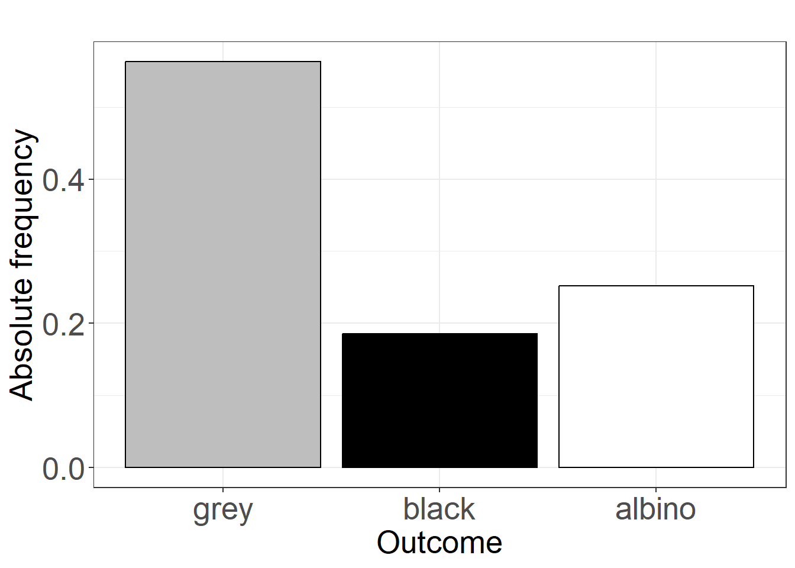
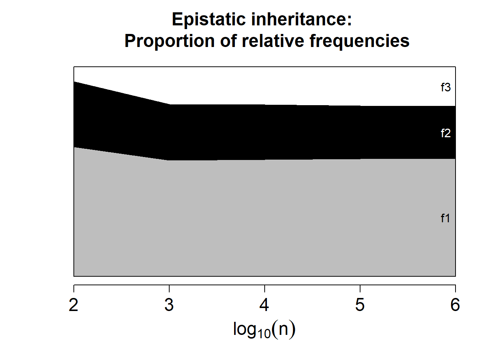

Chapter 3 Probability
We may state that one of the primary objectives of experimental sciences is either to predict the outcomes of a random experiment or to gain control over the experiment to influence the frequencies of outcomes in a desired manner.
We hold a strong belief that advances in our knowledge and understanding of the experiment, framed within a coherent body of theories, will shed light on these objectives. Statistics plays a pivotal role in this endeavor, as it seeks to account for the randomness inherent in experiments and helps us extract meaningful signals from noise. Paradoxically, statistics involves the systematic study of aspects the experimentalist is not directly interested in: randomness and noise.
The central epistemic question behind statistics is this: How can we derive knowledge from a random experiment when its results vary each time it is conducted? There must be some invariant—a physical property of the experiment—that we can identify and, in certain cases, influence. A cornerstone of experimental sciences is the recognition that the propensities with which outcomes occur are intrinsic properties of the random experiment itself. When a random experiment is repeated, each outcome retains the same propensity of being observed. Sometimes a specific outcome will occur, and sometimes it will not, but as the experiment is repeated, the outcome will appear with a certain regularity: perhaps 2 out of 5 times, or 3 out of 7. While we can never predict with certainty for a finite number of repetitions, if the experiment were repeated an infinite number of times, the exact propensity of each outcome would be revealed.
In this chapter, we introduce the concept of probability as the value approached by relative frequencies when a random experiment is repeated infinitely. For experiments in which all outcomes have equal probabilities, this frequentist definition aligns with the classical definition of probability: the ratio of the number of favorable outcomes to the total number of possible outcomes. The frequentist definition also allows for a propensity interpretation, which views probabilities as abstract defining properties of the random experiment.
With the help of a dice, computer simulations and the inheritance of genetic traits, we will define and explain the fundamental rules of probability in alignment with relative frequency tables. Events will be introduced as the basic elements to which probabilities are assigned. Composite events will be constructed using the principles of set algebra.
The concept of the joint probability of two events will be derived from these axioms and will serve as the foundation for incorporating multiple simultaneous measurements in a random experiment. This will form the foundation of conditional probability and statistical independence, which will be explored in the next chapter.
3.1 Probability mesurement
We seek a measure of the likelihood that a particular outcome will occur in a future instance of a random experiment. These likelihoods will be referred to as probabilities of outcomes and will represent statements about their future occurrences.
We define the probability of an outcome as a measure of its propensity or likelihood of occurring, assigning it specific values:
- 0, when the outcome has no possibility of occurring in the next run of the experiment.
- 1, when the outcome is certain to occur in the next run of the experiment.
Intermediate values can be easily conceived for a class of experiments with many outcomes, each equally likely.
3.2 Classical probability
As long as a random experiment has \(m\) possible outcomes that are all equally likely, the probability of each outcome \(i\) can be defined as:
\[P_i =\frac{1}{m}\].
Classical probability was explicitly defined by Laplace (1814).
Since every outcome is equally likely in this type of experiment, we may declare complete ignorance and, consequently, the best we can do is to equally distribute the same probability to each outcome. In other words, there are some random experiments for which we have no reason to assign more likelihood to one outcome than another.
Note that:
- \(P_i\) is an abstract defining property of the random experiment.
- We do not observe \(P_i\).
- We deduce \(P_i\) from the ratio above and have no need to carry out any experiment to know it.
Example (dice):
What is the probability that we will get \(2\) on the roll of a die?
\[P_2=1/6=0.166666\]
We reason that all other \(5\) numbers in the dice are equally likely to \(2\). The equal probability of the dice outcomes is a property of the random experiment of rolling it, which just states that the dice is fair and we should not expect one outcome rather than another.
3.3 Relative frequencies
What about random experiments whose possible outcomes are not equally likely?
How then can we define the probabilities of the outcomes?
Example (mouse coating)
Imagine that we obtain \(20\) mice from a couple, both of which are grey in color. We write down the colors of their progeny:
grey, grey, grey, grey, grey, albino, grey, black, albino, grey, black, grey, grey, grey, grey, black, grey, albino, black, grey
From this data, how sure are we of obtaining an albino offspring from a future breading of the couple?
The frequency table is
\[ \begin{array}{ccc} \mathbf{outcome} & \mathbf{n_i} & \mathbf{f_i} \\ \text{grey} & 13 & 0.65 \\ \text{black} & 4 & 0.20 \\ \text{albino} & 3 & 0.15 \\ \hline \mathbf{sum} & 20 & 1 \end{array} \]
and the bar plot

The relative frequency \(f_i =\frac{n_ i}{n}\) seems like a reasonable probability measure because
- it is a number between \(0\) and \(1\); and
- it measures the proportion of the total number of observations that we obtained for a particular outcome.
Since \(f_{albino}=0.15\) then we would be about one sixth sure or, more precisely, three out of every \(20\) observations, of getting albino.
How good is \(f_i\) as a measure of the outcome’s \(i\) likelihood?
Let us imagine, we repeat the previous experiment \(100,000\) more times. This is clearly impossible in practice but to achieve this, we will use the computer to simulate data based on a known inheritance model.
Here is the approach: Genetic theory for the epistatic model (Exercise 5), where albinism inhibits the grey and black coat colors, tell us that the relative ratios are 9:3:4 for grey, black and albino respectively. This means that out of \(16\) possible mice, \(4\) can be albino. To simulate this, we instruct the computer to create an urn containing \(9\) grey balls, \(3\) black balls, and \(4\) albino balls. A ball is drawn at random, its label is recorded, and then it is returned to the urn. This simulates running one single random experiment of epistatic inheritance.
We can repeat this process \(20\) times, as we did earlier, or \(100,000\) times, as we now show. The resulting frequency table is now as follows:
\[ \begin{array}{ccc} \mathbf{outcome} & \mathbf{n_i} & \mathbf{f_i} \\ \text{grey} & 56281 & 0.56281 \\ \text{black} & 18542 & 0.18542 \\ \text{albino} & 25177 & 0.25177 \\ \hline \mathbf{sum} & 100000 & 1 \end{array} \]
and the bar plot is

We see that the frequency for \(f_{albino}\) is now \(0.25145\), which is closer to the likelihood of \(4\) in \(16\) (\(0.25\)) for producing an albino in the next offspring. Thus, we note that the probabilities measured by \(f_i\) vary with \(n\).
A crucial fact is that when we compute \(f_i\) with increasing values of \(n\), \(f_i\) converges.
In the following, graph each vertical section gives the relative frequency of each observation, for a given value of \(n\). We see that after \(n=1000\) (\(log10(n)=3\)) the sections’ proportions hardly change with more \(n\), and the relative frequencies stabilize.

An important point needs to be made. The unequal frequencies \(f_1\), \(f_2\) and \(f_3\), at given \(n\) and shown in the figure, were obtained from an experiment with \(16\) equally likely outcomes. Each of the \(16\) balls in the urn has the same chance of being drawn. Four balls are labeled “albino,” giving them an accumulated probability of \(0.25\) of being drawn. In practice, after drawing a million balls, we observed a relative frequency of \(0.249898\) for albino. While this is not exactly \(0.25\), it is very close. As the number of draws increases, the relative frequency approaches the probability, becoming equal to it only at infinity.
By drawing an analogy between the urn and the reproduction of mice, we can imagine that the mice could reproduce to arbitrary numbers. While this is clearly impossible, it represents a step toward abstract thinking. If the mice could reproduce indefinitely, just as balls can be drawn from an urn indefinitely, then the relative frequency would converge to the probability. Specifically, the relative frequency \(f_i\) at infinity becomes an abstract quantity \(P_i\), the constant value to which \(f_i\) converges:
\[\lim_{n \to \infty} f_i = P_i\]
This quantity, \(P_i\), is what we call frequentist probability. It is important to note that \(f_i\) is derived from a finite number \(n\) of observations. In the lab, we can only perform a limited number of repetitions of a random experiment—always far from infinity. No amount of observations can definitively prove that the inheritance model is epistatic, especially with just \(20\) observations, or with real data from actual mice. However, as we will discuss in the following chapters, we can state with a certain level of confidence that the observed frequencies are consistent with an epistatic model.
3.4 Frequentist probability
We call Probability \(P_i\) the limit as \(n \rightarrow \infty\) of the relative frequency of observing the outcome \(i\) in a random experiment.
Defended by Venn (1876), the frequentist definition of probability is derived from (empirical) data/experience.
Note that:
- \(P_i\) is a property of an infinite repetition of the random experiment.
- We do not observe \(P_i\), we observe \(f_i\) at a given value of \(n\).
- We estimate \(P_i\) with \(f_i\) (usually when \(n\) is large), and write: \[\hat {P_ i}= f_i\]
Similar to the relationship between observation and outcome, there is a relationship between relative frequency and probability: a concrete value corresponding to an abstract quantity.
A suitable interpretation of probability in experimental sciences is as the propensity of a random experiment to produce a given outcome (Popper 2002). Probability is thus viewed as an abstract defining property of a random experiment, which can be either approximated as the experiment is repeated a large number of times, or known by experimental design.
3.5 Classical and frequentist probabilities
We have situations where classical probability can be used to find the limit of relative frequencies:
- If the results are equally probable, the classical probability gives us the limit:
\[P_i=lim_{n\rightarrow \infty} \frac{n_i}{n}=\frac{1}{m}\]
- If the results in which we are interested can be derived from other equally probable results, as in the mice coating example and the following one.
Example (sum of two dice)
Let us consider the sum of the outcomes when rolling two dice. We can determine the exact probabilities of the outcomes without actually rolling the dice.
This probability follows from the fact that the outcome of each die is equally likely. From this assumption, we can find that (Exercise 1)
\[ P_i = \begin{cases} \frac{i-1}{36},& i \in \{2,3,4,5,6, 7\} \\ \frac{13-i}{36},& i \in \{8,9,10,11,12\} \\ \end{cases} \]
Imagine, however, that we have a black box where we do not know that two dice are being thrown, but we can see the result of their roll displayed on a screen
\[5, 3, 11, 9, 5, 7\]
We are then able to closely approach the probabilities of the random experiment using the relative frequencies if we repeat the experiment a million times (as simulated by a computer)
\[ \begin{array}{cccc} \mathbf{outcome} & \mathbf{n_i} & \mathbf{f_i} & \mathbf{P_i} \\ 2 & 28070 & 0.028070 & 0.02777778 \\ 3 & 55617 & 0.055617 & 0.05555556 \\ 4 & 82964 & 0.082964 & 0.08333333 \\ 5 & 111113 & 0.111113 & 0.11111111 \\ 6 & 138749 & 0.138749 & 0.13888889 \\ 7 & 166717 & 0.166717 & 0.16666667 \\ 8 & 139011 & 0.139011 & 0.13888889 \\ 9 & 111193 & 0.111193 & 0.11111111 \\ 10 & 83504 & 0.083504 & 0.08333333 \\ 11 & 55397 & 0.055397 & 0.05555556 \\ 12 & 27665 & 0.027665 & 0.02777778 \\ \hline \mathbf{sum} & 1000000 & 1 & 1 \\ \end{array} \]
Exact knowledge can be obtained from a model without the need to conduct an experiment, using the formula for \(P_i\). In contrast, precise knowledge about outcome likelihoods can be derived from large amounts of data, even without understanding the underlying mechanisms. Models are free to describe any experiment, real or not, while data can yield accurate predictions without necessarily deepening our understanding. Kant observed, ‘Thoughts without content are empty; intuitions without concepts are blind.’ Thus, scientific content and insight are often achieved by contrasting a model’s predictions with experimental results.
The motivation behind the frequentist definition of probability is empirical, while that of the classical definition is rational. Since both approaches are complementary, we often combine them with inference and deduction to determine the probabilities of our random experiment.
3.6 Sample space
Probabilities are numbers assigned to each possible outcome of a random experiment. However, probabilities are also applied to composite outcomes or events. For instance, we can ask about the probability of drawing a ball labeled “albino” when there are four such balls out of a total of 16. Each “albino” ball represents a different outcome of the drawing, but the event of drawing an “albino” ball is the same.
Therefore, before providing a formal definition of probabilities, we need a further characterization of the outcomes that a random experiment can produce.
The set of all possible outcomes of a random experiment is called the sample space and is denoted by \(S\).
The sample space can consist of categorical or numerical outcomes. It represents the range of outcomes that a random experiment can yield.
For example:
- human temperature: \(S = (36, 42)\) degrees Celsius
- sugar levels in humans: \(S =( 70,80) mg/ dL\)
- the size of a production line screw: \(S =(70,72) mm\)
- number of emails received in an hour: \(S = \{0, ...\infty \}\)
- coat colors of mice: \(S= \{grey, black, albino\}\)
- the throw of a dice: \(S= \{ 1, 2, 3, 4, 5, 6\}\)
3.7 Events
An event \(A\) is a subset of the sample space. It is a collection of possible outcomes.
Examples of events:
- The event of a healthy temperature: \(A=(37,38)\) degrees Celsius
- The event of producing a screw with a size range: \(A = (71.5mm, 71.6mm)\)
- The event of receiving more than \(4\) emails in an hour: \(A= \{ 4, \infty \}\)
- The event of obtaining an albino mouse \(A=\{albino\}\)
- The event of obtaining a number less than or equal to 3 in the throw of a dice: \(A= \{ 1,2,3\}\)
An event refers to a possible set of primary outcomes.
3.8 Algebra of events
While it seems clear that the result of a random experiment can give us a specific outcome or a more general event, it is also expected that the result of the experiment can be a composite event.
For two events \(A\) and \(B\), we can construct the following composite events using the basic set operations:
- Complement \(A'\): the event of not \(A\)
- Union \(A \cup B\): the event of \(A\) or \(B\)
- Intersection \(A \cap B\): the event of \(A\) and \(B\)
Example (dice)
Let us imagine we intend to roll a die but first we want look at a range of interesting events (composite outcomes):
- a number less than or equal to three \(A:\{ 1,2,3\}\)
- an even number \(B:\{ 2,4,6\}\)
Let us see how we can build new events with set operations:
- a number not less than three: \(A':\{4,5,6\}\)
- a number less than or equal to three or even: \(A \cup B: \{ 1,2,3,4,6\}\)
- a number less than or equal to three and even \(A \cap B: \{ 2\}\)
Random experiments produce a rich set of outcomes that can be gather together in events and transformed into other more complex events. Probabilities will be, consequently, defined on events.
3.9 Mutually exclusive events
Primary outcomes like rolling \(1\) and \(2\) on a die are events that cannot occur at the same run of the experiment, a single roll of the dice. We say that they are mutually exclusive.
In general, two events denoted as \(E_1\) and \(E_2\) are mutually exclusive when they have no element in common
\[E_1\cap E_2=\emptyset\]
Examples:
The following events are mutually exclusive:
The result that a patient has a misophonia severity \(1\) and severity \(4\). Only one severity is possible.
The results of obtaining \(12\) and \(5\) in the roll of two dice. If we get \(12\) we do not get \(5\).
However, the events of rolling a number “less than or equal to three” and “even” in a dice are not mutually exclusive. They share the outcome \(2\).
3.10 Definition of probability
The probability of an event, as an abstract quantity, is defined by a set of axioms. These axioms represent the minimum set of rules that relate to relative frequencies.
The probabilities of a random experiment’s events are numbers satisfying the following properties or axioms:
When the events \(E_1\) and \(E_2\) are mutually exclusive; that is, only one of them can occur, the probability of observing \(E_1\) or \(E_1\) is their sum: \[ P( E_1\cup E_2) = P(E_1) + P(E_2)\]
When \(S\) is the sample space, then its probability is \(1\) (at least something is observed): \[P(S)=1\]
The probability of any event is between \(0\) and \(1\) (a continuous and bounded measure) \[P(E) \in [0,1]\]
Remarkably, the axioms were proposed by Kolmogorov in 1933 (Kolmogorov 2013), after statistics had already been formally established as a distinct discipline and following the formulation of statistical and quantum mechanics—two prominent physics theories based on probability concepts. Advancement in these theories was possible because probabilities were treated as frequencies of infinite populations.
3.11 Probability table
Kolmogorov’s axioms are the fundamental rules for defining a measure on the sample space and, as such, are independent of any specific interpretation. Probabilities, as mathematical objects, do not necessarily need to represent any random experiment. However, our interest lies in probabilities as measures of the likelihood of outcomes in real random experiments. Kolmogorov’s axioms importantly support the close alignment of probabilities with relative frequencies, as they also form the foundational rules for constructing a probability table, similar to relative frequency tables.
Therefore, we can assert that frequencies tend to probabilities as the random experiment is repeated indefinitely, or that probabilities may be regarded as abstract defining properties of the experiment, representing the likelihood of its outcomes in the next repetition of the experiment.
Example (dice)
The probability table for the roll of a dice is
\[ \begin{array}{cc} \mathbf{outcome} & \mathbf{P_i} \\ 1 & 1/6 \\ 2 & 1/6 \\ 3 & 1/6 \\ 4 & 1/6 \\ 5 & 1/6 \\ 6 & 1/6 \\ \hline S=\{1, 2, ... 6\} & 1 \\ \end{array} \]
Let us verify the axioms:
Where \(1 \cup 2\) is, for example, the event of rolling a \(1\) or a \(2\). So \[ P( 1 \cup 2)=P(1)+P(2)=2/6\]
Since \(S= \{ 1,2,3,4,5,6\}\) is made up of mutually exclusive outcomes, then
\[P(S)=P(1\cup 2 ... \cup 6) = P(1)+P(2)+ ...+P(6)=1\]
- The probabilities of each outcome are between \(0\) and \(1\). This can be seen in the table.
According to Kolmogorov’s properties, only mutually exclusive outcomes can be organized into probability tables, similar to relative frequency tables.
3.12 Joint probabilities
Mutually exclusive events whose overall union is the sample space can be considered primary events. They constitute all the possible values of a type of measurement of the experiment that can be listed in a table.
However, we have seen that there are events that are not mutually exclusive. How are we to understand them and to list them on a probability table? Two different events with a common outcome may then constitute two different types of measurement, that sometimes coincide in that common outcome.
Let us consider the probability table for the dice and the events:
a number less than or equal to three \(A:\{ 1,2,3\}\)
an even number \(B:\{ 2,4,6\}\)
which are not mutually exclusive coinciding in the outcome \(2\): \(A \cap B = \{2\}\).
In the rolling of a dice, we can observe there types of outcomes, or three types of measurements: a number from 1 to 6 (outcome 1), the event of whether a number is \(\leq 3\) (outcome 2) or the event of whether a number is pair (outcome 3).
\[ \begin{array}{cccc} \mathbf{outcome\, 1} & \mathbf{outcome\, 2} & \mathbf{outcome\, 3} & \mathbf{P_i} \\ 1 & A & B' & 1/6 \\ \mathbf{2} & \mathbf{A} & \mathbf{B} & \mathbf{1/6} \\ 3 & A & B' & 1/6 \\ 4 & A'& B & 1/6 \\ 5 & A'& B' & 1/6 \\ 6 & A'& B & 1/6 \\ \hline S=\{1, 2, ... ,6\} & S=\{A \cup A'\} & S=\{B \cup B'\} & 1 \\ \end{array} \]
Now, we can also observe the occurrence of the the crossed possibilities between outcomes 2 and 3. In particular, we can consider the joint event \(A\cap B\) as the event with two different qualities: “being greater or equal to 3” and “pair”, namely, outcome 1 being \(2\).
For non mutually exclusive events, those that share common primary outcomes, we note that we can always decompose the sample space into mutually exclusive sets involving the intersections of the crossed possibilities between the events and their complements:
\[S=\{A\cap B, A \cap B', A'\cap B, A'\cap B'\}\] If one of those events occur the others do not. We can now make a probability table of these events. The joint probability of \(A\) and \(B\) is the probability of \(A\) and \(B\). That is \[P( A \cap B)\] or \(P(A,B)\). The probability table for the joint probabilities will be as follows
\[ \begin{array}{ll} \mathbf{outcome\, 4} & \mathbf{joint\,probabilities} \\ A\cap B=\{2\} & P(A\cap B)=1/6 \\ A\cap B'=\{1,3\} & P(A\cap B')=2/6 \\ A'\cap B=\{4,6\} & P(A'\cap B)=2/6 \\ A'\cap B'=\{5\} & P(A'\cap B')=1/6 \\ \hline S=\{A\cap B, ... A'\cap B'\} & P(S)=1 \\ \end{array} \]
The outcomes of type 4 are, therefore, composed of 4 mutually exclusive events, namely a number in the dice that is: “\(\leq 3\) and pair”; or “\(\leq 3\) and not pair”; or “not \(\leq 3\) and pair”; or “not \(\leq 3\) and not pair”. The probabilities of the sum off all these composite events is \(1\).
The marginals of \(A\) and \(A'\) are the probabilities of each of those events. That is
\[ \begin{array}{ll} \mathbf{outcome\, 2} & \mathbf{marginal\,probabilities} \\ A=\{1,2,3\} & P(A)=3/6 \\ A'=\{4,5,6\} & P(A')=3/6 \\ \hline S=A\cup A' & P(S)=1 \\ \end{array} \]
Note that the marginal \(P(A)\) is the addition of the joint probabilities where \(A\) occurs \[P(A)=P(A\cap B') + P(A \cap B)\] \[=2/6+1/6=3/6\] .
Similarly we have the marginals for \(B\) and \(B'\)
\[ \begin{array}{ll} \mathbf{outcome\, 3} & \mathbf{marginal\,probabilities} \\ B=\{2,4,6\} & P(B)=3/6 \\ B'=\{1,3,5\} & P(B')=3/6 \\ \hline S=A\cup A' & P(S)=1 \\ \end{array} \]
And, the marginal \(P(B)\) is the addition of all the probabilities where event \(B\) occurs \[P(B)=P(A'\cap B) +P(A \cap B)\] \[=2/6+1/6=3/6\]
3.13 Contingency table
The joint and the marginal probability tables can be written in a single contingency table
\[ \begin{array}{ccc|c} & \mathbf{B} & \mathbf{B'} & \mathbf{marginals} \\ \mathbf{A} & P(A \cap B) & P(A \cap B') & P(A) \\ \mathbf{A'} & P(A' \cap B) & P(A' \cap B') & P(A') \\ \hline \mathbf{marginals} & P(B) & P(B') & 1 \\ \end{array} \]
Where the marginals are the sums in the margins of the table, for example:
- \(P(A)=P(A \cap B') + P(A \cap B)\)
- \(P(B)=P(A' \cap B) + P(A \cap B)\)
In our example, the contingency table for the events \(A\) and \(B\) and their complements is
\[ \begin{array}{ccc|c} & \mathbf{B} & \mathbf{B'} & \mathbf{marginals} \\ \mathbf{A} & 1/6 & 2/6 & 3/6 \\ \mathbf{A'} & 2/6 & 1/6 & 3/6 \\ \hline \mathbf{marginals} & 3/6 & 3/6 & 1 \\ \end{array} \]
3.14 The addition rule
The addition rule allows us to calculate the probability of \(A\) or \(B\), \(P( A \cup B)\), in terms of the probability of \(A\) and \(B\), \(P(A \cap B )\). We can do this in three equivalent ways:
Using only joint probabilities \[P( A \cup B)=P(A \cap B)+P(A\cap B')+P(A'\cap B)\]
Using the complement of the joint probability \[P(A \cup B)=1-P(A'\cap B')\]
Using the marginals and the joint probability \[P(A \cup B)=P(A) + P(B) - P(A\cap B)\]
Example (Mendel’s first law)
Every organism inherits two versions of a gene that we call alleles, one from each parent (\(X_m\),\(X_f\)). This is the joint event (\(X_m \cap X_f\)). The alleles can be identical or different, and sometimes can be linked to a characteristic of the organism. For the coat color of mice there is one allele for albino (\(A\)) and another for not-albino (\(A'\)), which allows any color.
Inheritance of the alleles is made at random with equal probabilities from the parental alleles. For one offspring, we define
the event of inheriting albino allele from the mother \(A_m\)
the event of inheriting albino allele from the father \(A_f\)
If both parents are hybrids they both have alleles (\(A \cap A'\)) and their offspring can have four allele pairs
\[S =\{A_m \cap A_f, A_m \cap A_f', A_m' \cap A_f, A_m' \cap A_f'\}\]
with equal probabilities of \(1/4\). The contingency table is
\[ \begin{array}{ccc|c} & \mathbf{A_f} & \mathbf{A_f'} & \mathbf{marginals} \\ \mathbf{A_m} & 1/4 & \mathbf{1/4} & 1/2 \\ \mathbf{A_m'} & \mathbf{1/4} & \mathbf{1/4} & 1/2 \\ \hline \mathbf{marginals} & 1/2 & 1/2 & 1 \\ \end{array} \]
Having a color is dominant trait, which means that a mouse is colored if at least one the alleles is not albino. That is the event \((A'_m \cup A'_f)\).
Therefore, the probability of producing a color mouse is \(3/4\) that can be computed in three different ways:
\(P( A'_m \cup A'_f)=P(A'_m \cap A'_f)+P(A_m\cap A_f')+P(A_m'\cap A_f)=1/4+1/4+1/4=3/4\)
\(P(A'_m \cup A'_f)=1-P(A_m\cap A_f)= 1-1/4=3/4\)
\(P( A'_m \cup A'_f)=P(A'_m) + P(A'_f) - P(A'_m\cap A'_f)=1/2+1/2-1/4=3/4\)
In the contingency table, \(P( A'_m \cup A'_f)\) corresponds to the addition of the three cells in bold (method 1 above). The probability is also given by the addition of all cells but the \(1/4\) from the top left (method 2), or by adding the marginals and subtracting \(P(A'_m\cap A'_f)\) that has been added twice (method 3).
Color is a dominant trait because it masks albinism when present in only one allele. We can also say that albino is a recessive trait. Therefore, the probabilities for color and albino are given by the ratio of 3 to 1 (3:1), or probability \(3/4=0.75\), satisfying the Mendel’s first law (Mendel 1901).
We can consider more alleles at other genes that are not mutually exclusive with the inheritance of the albino alleles. For example, if we observe an additional trait (outcome type) with two alleles for the length of the ears (short or long), there will be \(16\) possible allele combinations, for all the possible crossings of paternal alleles. According to Mendel’s second law, if the traits are independent, there will be four possible types of mice with different albino and tail length status, having ratios of 9:3:3:1 (see Exercise 4); with only one possibility in 16 for the albino and long ear mice.
William Bateson observed that some traits interfere with each other; for instance, being albino eliminates coat pigmentation. In such cases, inheritance deviates from Mendelian patterns and is considered epistatic, resulting in ratios like 9:3:4 (see Exercise 5), with only three observed colors.
After collecting data from several offspring, our scientific interest may lie in determining whether two traits are independent or if one trait suppresses the other, potentially to gain control over the first if harmful. While exact probabilities cannot be derived from relative frequencies, sufficient evidence may still be obtained to decide which scenario is more likely.
3.15 Questions
The following data is part of John Snow’s study on the London 1854 cholera epidemic, which was foundational for modern epidemiology and early germ theory (Snow 1855). He famously showed that cholera was transmitted by water and that identified Southwark and Vauxall water supply was the likely source of the epidemic. The following data record the date of death and the water supply source used by 3920 deceased patients. While more deaths were recorded Southwark and Vauxall the number of houses supplied by each company needs to be taken into account for correct conclusions.
\[
\begin{array}{|l|r|r|r|r|r|r|}
\hline
\textbf{Week Ending} & \textbf{Total} & \textbf{S and V} & \textbf{Lambeth} & \textbf{Kent} & \textbf{Other} & \textbf{Not Ascertained} \\
\hline
\text{Sept 2, 1854} & 670 & 399 & 45 & 38 & 72 & 116 \\
\text{Sept 9, 1854} & 972 & 580 & 72 & 45 & 62 & 213 \\
\text{Sept 16, 1854} & 856 & 524 & 66 & 48 & 44 & 174 \\
\text{Sept 23, 1854} & 724 & 432 & 72 & 28 & 62 & 130 \\
\text{Sept 30, 1854} & 383 & 228 & 25 & 19 & 24 & 87 \\
\text{Oct 7, 1854} & 200 & 121 & 14 & 10 & 9 & 46 \\
\text{Oct 14, 1854} & 115 & 69 & 8 & 3 & 6 & 29 \\
\hline
\textbf{Total} & \textbf{3920} & \textbf{2353} & \textbf{302} & \textbf{191} & \textbf{279} & \textbf{795} \\
\hline
\end{array}
\]
1) What is the estimated probability that a patient died on the 16th of September and likely drank from Southwark and Vauxhall’s water supply?
\(\qquad\)a: \(524/3920\); \(\qquad\)b: \(524/2353\); \(\qquad\)c: \(524\); \(\qquad\)d: \(524/856\)
2) What is the estimated probability that the deceased patient was not from the borough of Lambeth?
\(\qquad\)a: \(302/3920\); \(\qquad\)b: \(3618/3920\); \(\qquad\)c: \(795/3920\); \(\qquad\)d: \(279/3920\)
3) What is the marginal probability of dying in October?
\(\qquad\)a: \(3605/100\); \(\qquad\)b: \(315/3920\); \(\qquad\)c: \(315/100\); \(\qquad\)d: \(3605/3920\)
4) What is the marginal probability that Kent water company supplied a deceased patient?
\(\qquad\)a: \(13/191\); \(\qquad\)b: \(191\); \(\qquad\)c: \(191/3920\); \(\qquad\)d: \(191/100\)
5) What is the probability of dying in September or from an unknown water source? \(\qquad\)a: \(3680/3920\); \(\qquad\)b: \(3634/3920\); \(\qquad\)c: \(3620/3920\); \(\qquad\)d: \(3611/3920\)
3.16 Exercises
3.16.0.1 Classical probability: Exercise 1
Write the table of joint probability for the results of rolling two dice; In the rows write the results of the first die and in the columns the results of the second die.
What is the probability of drawing \((3, 4)\) ? (A:1/36)
What is the probability of rolling \(3\) and \(4\) with any of the two dice? (A:2/36)
What is the probability of rolling \(3\) on the first die or \(4\) on the second? (To:11/36)
What is the probability of rolling \(3\) or \(4\) with any dice? (A:20/36)
Write the probability table for the result of the add of two dice. Assume that the outcome of each die is equally likely. Verify that it is:
\[ P_i= \begin{cases} \frac{i-1}{36},& i \in \{2,3,4,5,6, 7\} \\ \frac{13-i}{36},& i \in \{8,9,10,11,12\} \\ \end{cases} \]
3.16.0.2 Frequentist probability: Exercise 2
The result of a randomized experiment is to measure the severity of misophonia and the state of depression of a patient.
Misophonia
- severity: \(S_M:\{M_ 0,M _1,M_2,M_3,M_4\}\)
- Depression: \(S_ D:\{ D', D\}\))
Write the contingency table for the absolute frequencies (\(n_{ M,D }\)) for a study on a total of 123 patients in which it was observed
- 100 individuals did not have depression.
- No individual with misophonia 4 and without depression.
- 5 individuals with grade 1 misophonia and no depression.
- The same number as the previous case for individuals with depression and without misophonia .
- 25 individuals without depression and grade 3 misophonia .
- The number of misophonics without depression for grades 2 and 0 were distributed equally .
- The number of individuals with depression and misophonia increased progressively in multiples of three, starting at 0 individuals for grade 1.
Answer the following questions:
- How many individuals had misophonia ? (A:83)
- How many individuals had grade 3 misophonia ? (A:31)
- How many individuals had grade 2 misophonia without depression? (A:35)
Write down the contingency table for relative frequencies \(f_{ M,D }\). Suppose \(N\) is large and the absolute frequencies estimate the probabilities \(f_{ M,D }=\hat {P}(M \cap D)\). Answer the following questions:
- What is the marginal probability of severity 2 misophonia ? (A: 0.3)
- What is the probability of not being misophonic and not being depressed? (A:0.284)
- What is the probability of being misophonic or depressed? (A: 0.715)
- What is the probability of being misophonic and being depressed? (A: 0.146)
- Describe in spoken language the results with probability 0.
3.16.0.3 Exercise 3
We have carried out a randomized experiment \(10\) times, which consists of recording the sex and vital status of patients with some type of cancer after 10 years of diagnosis. We got the following results
\[ \begin{array}{ccc} \mathbf{Patient} &\mathbf{Sex} & \mathbf{Status} \\ 1 & male & dead \\ 2 &male & dead \\ 3 &male & dead \\ 4 &female& alive \\ 5 &male & dead \\ 6 &female& alive \\ 7 &female& dead \\ 8 &female& alive \\ 9 &male & alive \\ 10 &male & alive \\ \end{array} \]
- Create the contingency table for the number (\(n_{ i,j }\)) of observations of each result (\(A,B\))
- Create the contingency table for the relative frequency (\(f_{ i,j }\)) of the results
- What is the marginal frequency of being a man? (R/0.6)
- What is the marginal frequency of being alive? (R/0.5)
- What is the frequency of being alive or being a woman? (R/0.6)
3.16.0.4 Exercise 4
Consider an additional gene in mice that determines ear length, with short ears being the dominant trait. Each mouse inherits alleles (\(X_m\), \(X_f\), \(Y_m\), \(Y_f\)), where \(X\) represents the alleles for albinism and \(Y\) the alleles for ear length, inherited from the mother (subscript m) and the father (subscript f).
Suppose both parents are dihybrid—i.e., (\(A,A',B,B'\))—and therefore express the dominant phenotypes: non-albino with short ears. Show that if the traits for albinism and ear length assort independently, then there are four distinct phenotypic outcomes among the offspring that appear in a 9:3:3:1 ratio, illustrating Mendel’s second law of independent assortment.
3.16.0.5 Exercise 5
Consider an additional gene in mice that determines black or grey color, with grey the dominant trait. Each mouse inherits alleles (\(X_m\), \(X_f\), \(Y_m\), \(Y_f\)), where \(X\) represents the alleles for albinism and \(Y\) the alleles for grey and black colors, inherited from the mother (subscript m) and the father (subscript f).
Suppose both parents are dihybrid—i.e., (\(A,A',B,B'\))—and therefore express the dominant phenotype: non-albino with grey color. Show that if the albinism removes pigmentation, then there are three distinct phenotypic outcomes among the offspring that appear in a 9:3:4 ratio, illustrating an apistatic model of inheritance.
3.17 Practice
Load misophonia data https://alejandro-isglobal.github.io/SDA/data/Misophonia.txt
Compute the contingency table of absolute frequencies for misophonia diagnosis (Misophonia severity) and depression (Depression)
Compute the contingency table of relative frequencies for misophonia diagnosis and depression
Compare the differences with exercise 2.